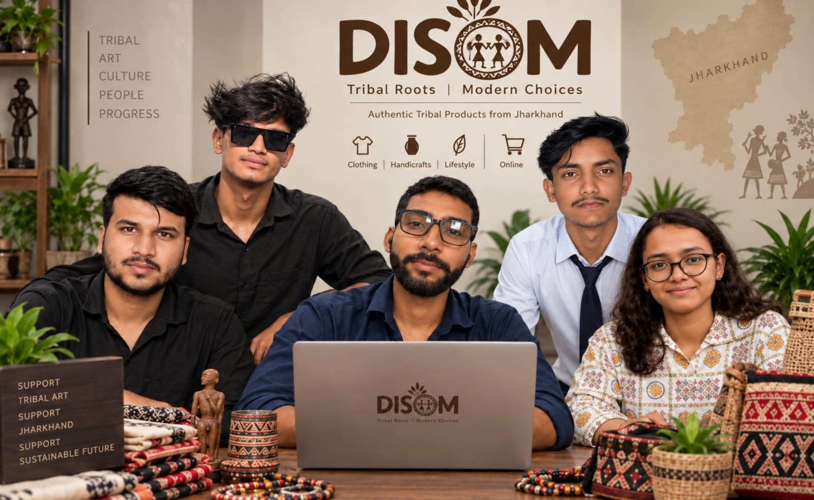

Priya Soni
Communication & Presentation Lead

DISOM is an educational, archival, and fair-trade commerce platform dedicated to the living heritage, languages, and artisanal knowledge of Jharkhand's Adivasi communities.
The word Disom in Santhali and Mundari signifies more than geographical territory—it translates to 'country', 'homeland', and the sacred cosmological balance between living beings and the forest.
For decades, mainstream digital representations of Jharkhand’s indigenous cultures have oscillated between two extremes: exoticized folkloric tokens or romanticized relics of antiquity. Both extremes strip Adivasi peoples of their contemporary agency, intellectual ownership, and economic dignity.
DISOM was founded to establish an institution of record. Here, material culture is shown with rigorous provenance; oral histories are presented in their native linguistic context; and indigenous artisans participate as sovereign creators rather than anonymous manual labour.
DISOM was created by diploma students of Government Polytechnic, Latehar, to bring Jharkhand's living tribal knowledge to more people.
The team believes that stories, languages, crafts, songs, and everyday wisdom deserve a respectful digital space. This project is their effort to preserve that knowledge, help young people discover it, and keep the voices behind it visible for future generations.

Built with care for the cultural knowledge of Jharkhand's tribal communities.
Communication & Presentation Lead
Technical Lead
Research & Documentation Lead
Technical & Development Lead
CEO Of Disom
Every exhibit, translation, and craft listing on DISOM adheres to an unwavering ethical framework.
Reverence for community protocols, sacred boundaries, and cultural ownership. Sacred rituals and private clan secrets are never commodified or exposed without elder sanction.
No artifact is isolated as a decorative curiosity. We detail the raw materials gathered from the forest, seasonal songs sung during weaving, and the customary ceremony in which it functions.
Explicit individual artisan attribution and named community lineage. We dismantle the historical anonymity of "tribal craft" by centering named makers and cooperatives.
Transparent economic value exchange. Fair compensation, dignified workshop conditions, and zero predatory middleman markups ensure artisan self-reliance.
Clear demarcation between documented scholarship, oral community memories, and curatorial interpretation. We never fabricate claims where field verification is still ongoing.
To treat Jharkhand's indigenous peoples as a single monolithic block is an injustice. The state encompasses over thirty distinct communities spanning different language families, spiritual cosmologies, and social institutions.
Mundari, Santhali, Ho, and Kharia belong to the Austroasiatic language family, related distantly to languages of Southeast Asia. In contrast, Kurukh (spoken by the Oraon) is a Dravidian language with grammatical roots shared with ancient southern Indian tongues.
While the Birhor have historically maintained specialized nomadic harvesting in deep canopy ravines, the Mahli cultivated master bamboo engineering, and the Santhal developed complex terrace wet-rice cultivation and earth mud-wall murals.
To collaboratively document, archive, and present Jharkhand’s indigenous knowledge systems through rigorous research, native speaker consultation, and ethical fair-trade commerce that directly empowers artisan families.
A world in which Adivasi histories and creative arts are not relegated to footnotes, but celebrated with peer intellectual standing, copyright protection, and digital longevity.

Standards governing archival documentation and commercial handicraft listings.
We reject unilateral anthropological claims. Field audio recordings, linguistic texts, and photographic documentation are created only with informed prior consent. Sacred symbols, death rituals, and esoteric healing plants are deliberately withheld from commercial exploitation.
Handicrafts are not sold as generic curiosities. Every product listing on DISOM discloses: artisan or cooperative identity, community provenance, material specifications, and cultural background. Sacred ritual tools are never offered for public purchase.

Our documentation infrastructure combines open-access digital repositories with localized field recording stations across Chota Nagpur and Santhal Parganas.
High-resolution 3D photogrammetry of ancient terracotta, audio recordings of dying dialectical songlines, and GIS-mapped sacred groves are preserved according to Dublin Core and UNESCO cultural heritage preservation standards.